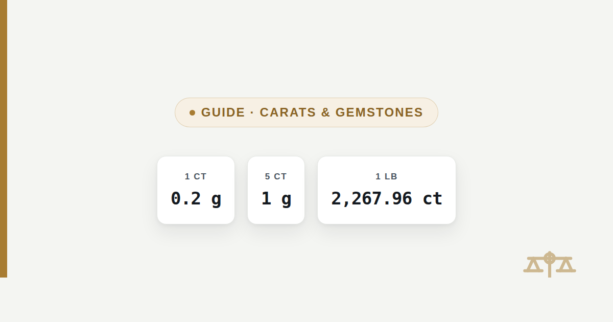

Diamond Carats to Grams to Pounds (and Why They Differ)
Carats are not grams and were never meant to be a shortcut for them. Here is the exact relationship, a full chart, and what carats look like once converted to pounds.

One carat is exactly 0.2 grams, and 0.2 grams is 0.0004 pounds. Carats convert to grams by a fixed, exact definition rather than an approximation, so a 1 carat diamond and a 0.2 gram weight are the same physical mass by law, not by coincidence. From there, converting to pounds works exactly like any other gram figure: divide by 453.59237.
The quick answer
1 carat equals 0.2 grams, which equals 0.0004 pounds. Multiply any carat figure by 0.2 to get grams, then divide that result by 453.59237 to get pounds. A 1 carat diamond, a 5 carat sapphire and a 500 carat rough stone all convert the same way — only the number of carats changes, never the 0.2 gram factor itself.
What a carat actually is
A carat is a fixed unit of mass equal to exactly 200 milligrams, defined that way by international agreement since 1907. Before that date, at least 23 different local definitions of the carat were in use around the world, ranging from about 187 mg to 216 mg, which meant the same stated carat weight could mean a physically different stone depending on which country's scale it was weighed on. In 1907 the 4th General Conference on Weights and Measures fixed the metric carat at 200 mg exactly, tying it directly to the gram rather than to a local custom, and that single definition is the one still used everywhere gemstones are traded today.
The word itself is older than the metric definition and comes from the carob seed, which traders once used as a small, reasonably consistent counterweight on a balance scale. That origin is historical rather than functional now — a modern carat has nothing to do with an actual seed's mass, it is simply 200 mg, full stop. It is also worth separating from "karat" with a k, which measures gold purity out of 24 parts and shares no numeric relationship with the gemstone carat at all; the two words sound identical but answer completely different questions.
Carats to grams to pounds chart
The table below covers the range from a small accent stone to a museum-scale rough diamond. Every gram figure is the carat count multiplied by 0.2 exactly; every pound figure is that gram figure divided by 453.59237, the exact size of an international avoirdupois pound.
| Carats (ct) | Grams (g) | Pounds (lb) |
|---|---|---|
| 0.25 ct | 0.0500 g | 0.0001 lb |
| 0.5 ct | 0.1000 g | 0.0002 lb |
| 0.75 ct | 0.1500 g | 0.0003 lb |
| 1 ct | 0.2000 g | 0.0004 lb |
| 1.5 ct | 0.3000 g | 0.0007 lb |
| 2 ct | 0.4000 g | 0.0009 lb |
| 3 ct | 0.6000 g | 0.0013 lb |
| 5 ct | 1.0000 g | 0.0022 lb |
| 10 ct | 2.0000 g | 0.0044 lb |
| 20 ct | 4.0000 g | 0.0088 lb |
| 50 ct | 10.0000 g | 0.0220 lb |
| 100 ct | 20.0000 g | 0.0441 lb |
| 500 ct | 100.0000 g | 0.2205 lb |
| 1000 ct | 200.0000 g | 0.4409 lb |
For a value not listed here, the formula is short enough to do by hand: multiply carats by 0.2 for grams, then divide by 453.59237 for pounds. The grams to lbs converter handles the second step for any number directly, once the carat figure has been turned into grams.
How many carats are in a pound
One pound is 2,267.96 carats. That comes from the same relationship run in reverse: a pound is 453.59237 grams exactly, and each carat is 0.2 grams, so dividing 453.59237 by 0.2 gives 2,267.96185 carats to a pound. In practical terms, no cut diamond ever approaches a pound — even the largest rough diamond ever found, covered below, is a small fraction of that.
1 lb ÷ 0.2 g per ct = 2,267.96 ct
check: 2,267.96 × 0.2 = 453.592 g ≈ 453.59237 g (rounding only)
check: 2,267.96 × 0.2 = 453.592 g ≈ 453.59237 g (rounding only)
This figure matters mainly as a sense of scale rather than a practical conversion, since gemstones are essentially never weighed in pounds in trade — carats, and for larger parcels sometimes grams, are what invoices and grading reports actually use. A pound of loose diamonds is a useful mental benchmark for just how light a single carat is, not a real-world unit anyone asks for at a counter.
Famous diamonds, converted to pounds
Even the largest diamonds ever found weigh a small fraction of a pound once their carat figure is converted. The Cullinan Diamond, the largest gem-quality rough diamond ever recovered, weighed 3,106.75 carats before cutting — 621.35 grams, or 1.3698 pounds, still under a pound and a half. The Hope Diamond, one of the most famous cut stones in the world, is 45.52 carats: 9.104 grams, or 0.0201 pounds, roughly two hundredths of a pound.
Cullinan Diamond (rough)
3,106.75 carats — 621.35 grams, or 1.3698 pounds. Discovered in South Africa in 1905, later cut into the Cullinan I and II now in the British Crown Jewels.
Hope Diamond
45.52 carats — 9.104 grams, or 0.0201 pounds. Held at the Smithsonian National Museum of Natural History, weighed on its current setting-free figure since 1974.
Excelsior Diamond (rough)
995.2 carats — 199.04 grams, or 0.4388 pounds. Found at the Jagersfontein Mine in South Africa in 1893, at the time the largest rough diamond on record.
None of these, even added together, would come close to a full pound of diamond by weight. The Cullinan alone accounts for most of the combined total above, and it is still under a pound and a half.
Carats and points
A point is one hundredth of a carat, so 100 points always equal 1 carat, and a "75-point" diamond is jeweler's shorthand for a 0.75 carat stone. Points exist because small stones are often sold or graded in increments smaller than a whole carat, and "75 points" reads more precisely on an invoice than "0.75 carats" while meaning the exact same weight.
| Points | Carats (ct) | Grams (g) |
|---|---|---|
| 10 pts | 0.10 ct | 0.0200 g |
| 25 pts | 0.25 ct | 0.0500 g |
| 50 pts | 0.50 ct | 0.1000 g |
| 75 pts | 0.75 ct | 0.1500 g |
Converting points to grams is a two-step version of the same carat formula: divide points by 100 to get carats, then multiply by 0.2 to get grams. A 25-point stone, for example, is 0.25 carats, which is 0.05 grams — the same weight whether it is labeled "0.25 ct" or "25 pts" on a certificate.
The distinction from a gram, and from precious metal weight, is worth keeping straight. Gold and other bullion are typically priced in troy ounces of 31.1034768 grams each, a completely different system from the metric carat used for gemstones — see the gold to pounds and troy ounces guide for that conversion. A carat and a troy ounce measure the same kind of thing, mass, but by unrelated scales, and mixing them up produces a nonsense figure rather than just a rounding error.
Frequently asked questions
What does carat weight actually mean on a diamond?
Carat weight is a measure of mass, not size or visual dimension: it describes how much a diamond weighs, exactly 0.2 grams per carat, regardless of how the stone is cut or how large it looks face-up. Two diamonds of the same carat weight can look different sizes depending on their cut and proportions, because carat weight is measuring mass, not diameter.
How many carats should a diamond be for an engagement ring?
There is no fixed rule, but commonly cited figures put the average engagement ring stone between roughly 1 and 1.9 carats, which in weight terms is 0.2 to 0.38 grams, or about 0.0004 to 0.0008 pounds. That average is a market pattern, not a requirement; carat weight is a unit conversion question, and choosing a size is a separate personal decision this page does not weigh in on.
Is a half carat diamond too small?
In weight terms, a half carat diamond is 0.1 grams, or 0.0002 pounds, below the commonly cited engagement-ring average but a completely standard, widely sold size on its own. "Too small" is a matter of personal preference and how a stone is cut rather than anything the weight figure itself determines.
What carat weight is typical for diamond stud earrings?
Diamond studs are commonly sold in the 0.25 to 1 carat range per ear, which converts to 0.05-0.2 grams, or roughly 0.0001-0.0004 pounds, per stone. As with ring stones, that range reflects common buying patterns rather than a technical requirement.
How many carats are in a pound?
One pound is 2,267.96 carats, found by dividing 453.59237 grams (an exact pound) by 0.2 grams (an exact carat). It is a useful benchmark for scale rather than a practical unit: gemstones are carat-denominated in trade, and pounds essentially never appear on a diamond invoice or grading report.
Why are diamonds measured in carats instead of grams?
Diamonds are measured in carats because the unit was standardized specifically for gemstone trading in 1907, fixed at exactly 0.2 grams, and the entire global grading, invoicing and certification system built around that figure since then has no practical reason to switch. A carat is not a competing unit to the gram so much as a fixed multiple of it, so any carat figure converts to grams by simply multiplying by 0.2 — there is no ambiguity to resolve, unlike the troy-versus-avoirdupois ounce confusion in precious metals.
Sources
- International Bureau of Weights and Measures (BIPM), 4th General Conference on Weights and Measures, 1907 — adopted the metric carat of 200 mg
- International Yard and Pound Agreement, 1959 — defines the international avoirdupois pound as exactly 453.59237 g
- Smithsonian Institution, National Museum of Natural History — Hope Diamond weight (45.52 ct), measured 1974
- Royal Collection Trust — Cullinan Diamond rough weight (3,106.75 ct)